私密时光暂不支持群聊场景,请从和TA的单人聊天里邀请,或者在这里重新选择角色单独开始。
还没有可以邀请的角色。请先在小手机里创建一个角色,再回来开始你们的私密时光。


还没有收藏,点片单卡片右上角的心形就能收藏。
把你想要的情境告诉TA,TA会为你单独定制一条。
点头像选 2~3 位角色同场,他们会一起演绎这段时光(不分主次)。
正在连线...
这段时光结束了
粘贴按 [景:...] / [语:...] 格式写好的剧本文本,选一张封面图,直接生成语音,不再调用AI写剧情。多人剧本把台词写成 [语@名字:...],导入时给每个名字对号一位角色。